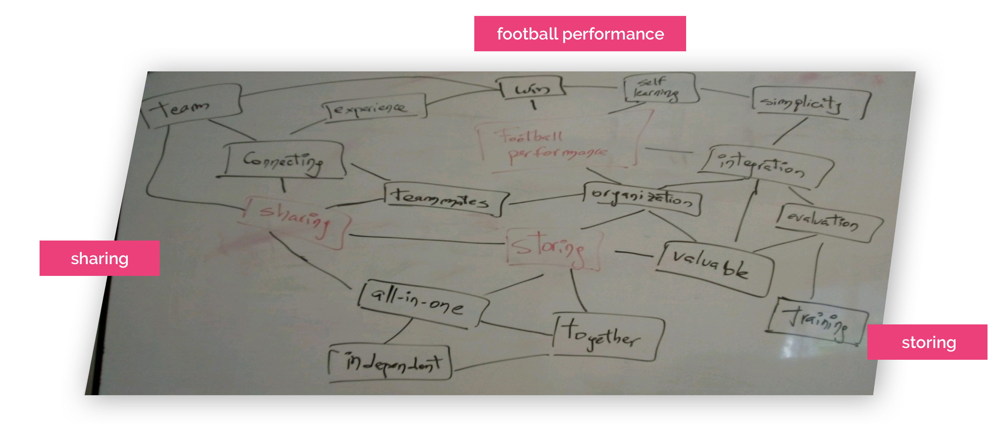
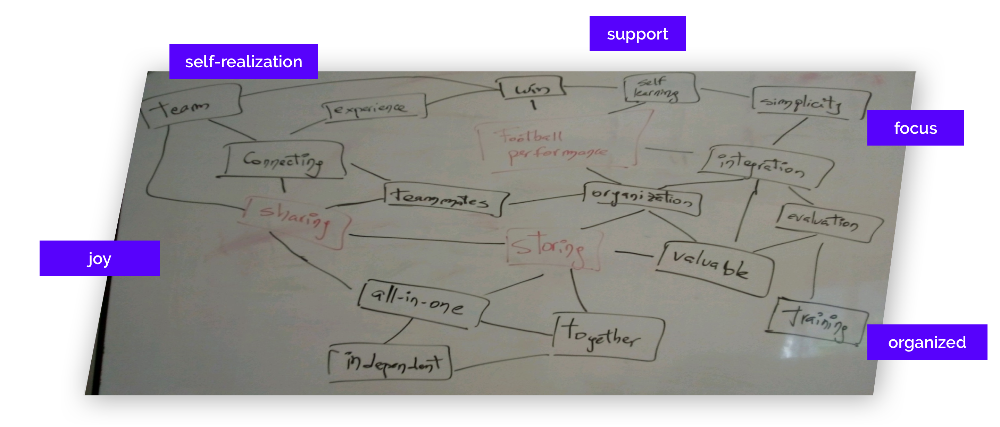
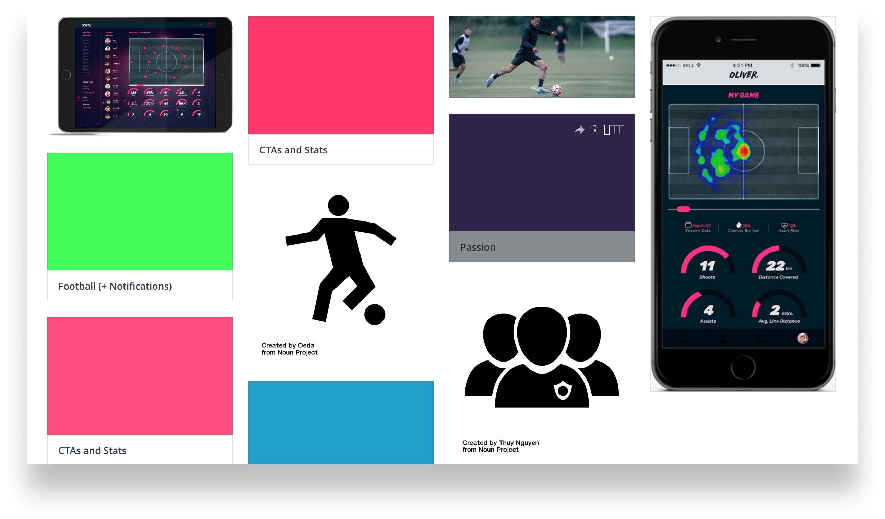
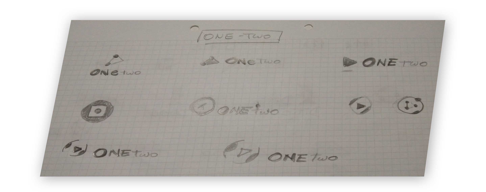
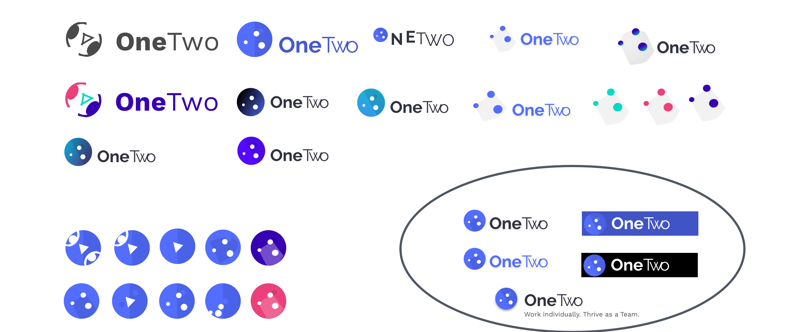
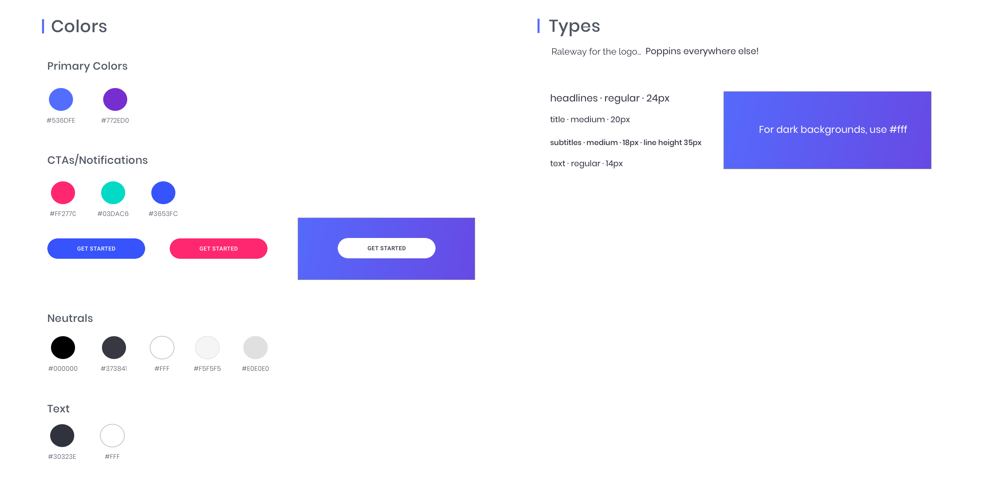
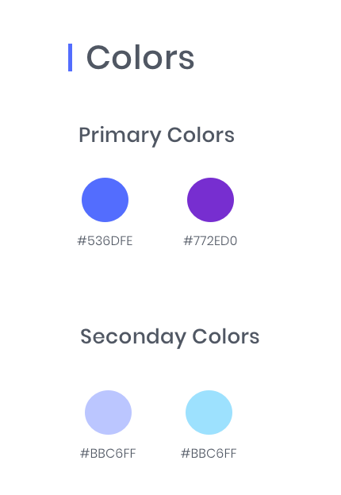
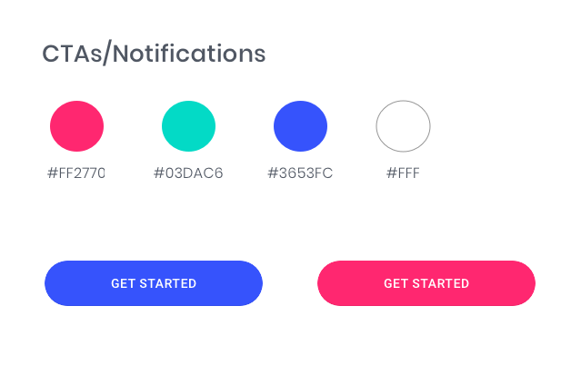
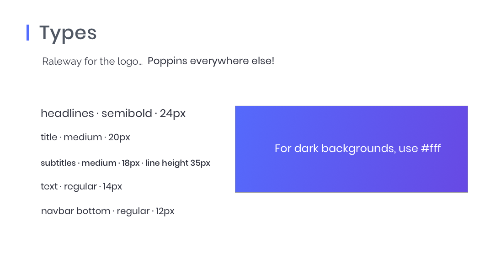

Work individually. Thrive as a Team.
I built the only football player app for storage, video performance and sharing, end to end.
- Role
- UX Researcher
- UI Designer
- Testing
- Deliverables
- Competitive Analysis
- User Survey
- User stories & Flows
- Wireframing
- Branding
- High Fidelity Prototype
- Usability Testing
- Preference Testing
- Timeframe
- 6 weeks
- Tools
- Google Forms
- Sketch
- InVision
- Usability Hub
Overview
I designed the football app OneTwo end to end, from research to clickable high-fidelity prototype. OneTwo is a mobile app that allows football players to see their stats, videos, save and share. Note: This is a project delivered as part of my UX/UI apprenticeship at Bloc.

THE PROBLEM
A suboptimal Football experience.
Football players (no matter whether they are amateur or professional) find a very hard time accessing the stats and videos of the games they play, and storing valuable content they see online.
As a result, their football experience is not complete, either because their individual performance on the pitch is lower than it could be, or because they struggle at saving and sharing exciting football content with peers.
THE SOLUTION
Hello OneTwo.
OneTwo is a mobile app that allows football players to take full control of their football experience.
Whether players are looking to improve their performance by receiving meaningful stats and videos of the games they played, or whether they are amateur football players looking to save and share exciting football content, OneTwo will be there for them.
Research and Discovery
How could you build an app out of only one sentence from a client? I decided to invest time to research and have a better understanding about what I should be working on.
SCOPING THE PROJECT
First things first.
"We're really excited at the possibilities we see in the cloud storage and organization market (...) there's room for another player if we can find the right combination of features to meet the needs of a particular audience".
That was all. Naturally, the first thing I needed to do is to clearly define what the problem we wanted to solve for was and what the available resources were. A list of potential problems to be solved was compiled in order to have a basic structure to start off, and also a list of questions to be answered along the way.
Given that the client was open to target specific niches and given that I know the football market quite well, a decision was made to shift the research towards understanding whether the football market (coaches and players) would be in need of a storage solution.
“There is an opportunity to build a storage solution tailor made for football players”. This was my initial hypothesis.
COMPETITIVE ANALYSIS
Storing, stats and sharing?
Next, I carried out a competitive analysis focusing on Google Drive, Dropbox and Evernote (which are primarily storage apps), but also looking at Wyscout and Instat Scout, which are football platforms that provide stats and videos to Coaches.
I also looked at how these apps where structured along three tasks: uploading files, organizing file and sharing files.
Based on the competitve analysis, no app had storage, data and player feedback functionalities, all at the same time.
USER SURVEY AND PERSONAS
Validating the Hypothesis.
The survey targeted football players and coaches to understand better and/or validate:
- Where/how they store content they see online.
- What the standard interaction between Coaches and football players is.
- What type of features/stats/videos they value the most.
- Whether all this varies by type of user.
In just 24 hours I received 146 respondents (39 football players and 107 Coaches or members of Coaching Staff), enough to proceed with analysing the feedback.
- 1
- 60% of the football players receive material from coaches but they are unaware of where to save it.
- 2
- Whatsapp is the main channel for communication and sharing.
- 3
- Almost 100% of the audience use their mobile devices to consume football content.
- 4
- Players AND Coaches rate getting stats/videos and saving content as the top valued features.
With these valuable insights, I was able to create four User Personas. Clearly there were different types of users, with clearly different needs (yet some overlapping). These user personas played an important role in identifying what the needs and frustrations are, as well as what things they value the most. Some would value storing and organizing, some others would find valuable to get football performance data right away on their devices.
Jordi Font (Coach, Youth Academy)
“I enjoy working with the next stars a lot. I hope to become a star in the future too.”
Key Paint Point
- The football products he uses don´t talk to each other. Everything needs to be done manually.
Sebastián Pérez (Pro Player)
“Football is my life. I need to make an excellent season and move to Europe.”
Key Paint Point
- Some Coaches may not provide him with the videos and stats he needs. He is too lazy to look for that.
Juan M. González (Businessman)
“Every Saturday, I play in a tournaments with friends. I love every single moment of that day”
Key Paint Point
- He can´t organize the material everyone sends through Whatsapp (for example, in tags or categories) and that content (which is vualuable for the team) gets lost.
Iñaki Gutiérrez (Youth Academy)
“My dream is to become a professional football player. Hard work is key. I will save my family!”
Key Paint Point
- He can´t organize the material his Coach sends. He doesn´t know where to store it and he doesn´t have time to think through that problem.
Recapping.
So far, I had been able to:
- Set and define a clear, defined hypothesis.
- Analyze the competition and have some first validation of the hypothesis, at least in theory.
- Get a more robus confirmation of the hypothesis by asking relevant users: the need is there.
- Get valuable information regarding what relevant users value the most.
What´s next
With all this information, I would move on to structuring the information and ending up with the first wireframes.

Info Architecture
I started by creating User Stories for all the different User Personas. For every high-priority task I then created flows which would allow me to design the sketches needed to get to the first wireframes (and test!).
USER STORIES & FLOWS
Structuring the journey.
User Stories were written down. A list of ~20 tasks for each user persona was carried out. After that, User Flows were created for all the 11 high-priority tasks. That allowed me to envision the journey I was going to take users through, as well as the different options that I would be surfacing to them.
For each of the high-priority tasks (in yellow), I designed the journey I was going to take the user through. In some cases, I also added some medium-priority tasks.
This example is for the task “I want to upload a file”.
WIREFRAMES
Sketch, test, sketch...
Wireframes were then built. It was an iterative process trying to find different ways of providing optimized journeys for the users.
11 different high-priority flows were sketched and digitalized for further testing. With all this, I was able to run my first Usability Tests, which helped me to optimize flow before creating the hi-fi mockups.
Wireframes for the high-priority user flows were sketched and then digitalized for further testing.
USABILITY TESTS
Onto testing.
The process started by understanding the top tasks users would like to achieve, the journey was then designed and sketched... Now, I needed to validate if it was intuitive enough.
So before moving onto the Visual Design stage, I ran a Usability Test, testing three of the high-priority tasks: signing up, uploading a file and organizing a file.
The three tasks were conducted successfully in a timely manner by all the users. No major roadblocks were found, except for the task of organizing a file. This allowed me to make the necessary corrections way in advance!
When trying to organize a file, user would tend to click on this “See More” option (see below, in red). By that time, there wasn´t an Organize/Move file option in this menu, so I added it. The only option was to click on the left side of the file, clearly not optimized for mobile.
After making the appropriate changes, the task of organizing a file became much more seamless to perform.
A big challenge: What is, technically, a Game?
From an information architecture point of view, the biggest challenge was to define what a Game is. Unlike traditional storage app, where one could have essentially folders, files and tags, the concept of Game also arises.
The definition adopted for “Game” was the following:
- A Game is an element different from a folder, a file or a tag.
- A Game acts as a folder in the sense that it can store other files (or folders) and that it can be associated with tags. But also a Game can contain stats and performance information coming from a data provider.
- A Game can also have “Season” and “Matchday” as attributes.
-
A Game
-
A Folder
-
A Tag
-
A File
Recapping.
So far, I had been able to:
- Set and validate a hypothesis.
- Get from users valuable insights around what needs and frustrations they have.
- Organize the information in a way that would allow users to take a theoretically seamless journey.
- Test three of the high-priority tasks, and make changes accordingly.
What´s next
With all this information, I was ready to move to the Visual Design stage, which would allow me to communicate and generate the appropriate concepts and emotions.
Visual Design
I had critical feedback by users which helped me validate the hypothesis; I defined the tasks, the journey, sketched the core functionality and tested it. Now it was time to create the visuals.
BRANDING AND BRANDING DISCOVERY
Bringing the joy of color.
The branding phase was a big process in itself, involving but not limited to the following:
- Branding research
- Refinement and Moodboards
- Color Palettes and Style Guide
How could I convey, through an appropriate use of fontypes, colors, images and communication, a significant set of emotions desired by a broad audience, ranging from purely football fans looking to have fun or store feelings, to professional players, who might take it more seriously and who would be simply looking to perform better? Definitely not easy :)
How could I convey, through an appropriate use of fontypes, colors, images and communication, a significant set of emotions desired by a broad audience, ranging from purely football fans to professional players?
Mind Mapping
The following mind-mapping was carried out in order to start tying ideas together. Three concepts were taken into account to start. The app should have: (a) The integration of Hudl in order to be able to get each player´s videos and help them perform better; (b) The capacity to store that Google Drive has; (c) The ability to share in a seamless way in order to maximize any football-fan experience.
 Naming the app: Dito or OneTwo?
Also, two strong candidates for the name of the product were discovered: “Dito” (meaning “control” in Latin) and “One-Two”. OneTwo was chosen. “One-two” is a football concept. It is the action when one player has at least one opponent in front of him, and in order to “eliminate” this/these opponent(s), he passes the ball to another player and runs forward to receive the pass from his teammate (but now far from his opponent). “One-two” represents quite precisely the spirit of the app and finally chosen as the name of the solution. OneTwo is made for individuals, but it gets more powerful when shared with the team.
Moodboard
With the concepts I wanted to create the solution around and with the feelings I wanted to convey, now was time to start putting together the colors and the elements that could appropriately represent what I wanted to create. Thus, I created a moodboard in InVision.
Sketching the logo
A lot of iteration has been made throughout the process: The reason for that was to try to achieve in a more precise way the branding goals. A summary of the evolution can be found in the following images:
 Creating the Style Guide
After all this thorough process, I was able to put together a Style Guide, which would help me turn my wireframes into live, high-fidelity mockups. Also, I could maintain a high level of consistency across screens, something quite difficult to achieve, given that the app had two very different sections (storage and performance.). Here is a link to the full style guide.
   HIGH FIDELITY PROTOTYPE
It´s Showtime!
With all the research done, the wireframes tested and validated and the core elements for the app branding defined and decided, I was able to finally create high fidelity mockups and a clickable prototype.
Throughout the process I made different iterations, some of them being tested afterwards through preference tests.
PREFERENCE TESTS AND PROTOTYPE
Final touches
A couple of preference tests were carried out, which informed about which combination of colors might be preferred by users. More can be done on this front as well if more time/resources can be allocated.
After that, tests were carried out testing three more high-priority tasks. The three tasks were ran successfully in a timely manner by the three users, sometimes following different paths. No major roadblocks have been found, even when tasks were ran by two heavy iOS users (the app is optimized for Android).
Final Usability Test - Task #1
Task #1 (see stats from a Game vs Barcelona) took the least time given that a link to that game was already in the homepage. But when users were asked to get to the stats using an alternative way, they also found it fast (except for one user, who had a hard time understanding where the hamburger menu was).
Final Usability Test - Task #2
Task #2 (upload a file and assign it to game vs Barcelona) was also ran successfully. Interestingly, users followed different pathways. Two started by first uploading a file and then assign it to the game and one of them first went to the game and uploaded it from there. The ability to provide user both alternatives should be kept.
Final Usability Test - Task #3
Task #3 (“share a file with a person called Amanda González”) was also ran successfully, although 100% of the users asked whether Amanda González was a teammate or someone in social (which are two separate options in the app). There was an opportunity to optimize the process by merging both options into one (e.g. “Share”) and/or by improving the wording (e.g. instead of saying “share with teammates” to say “share internally”, “share via OneTwo”, etc).

Work individually. Thrive as a Team.
Test yourself OneTwo, and take control of your football experience.

Lessons and further work
In these 3 months of work, I had the opportunity to embark on one of the biggest digital challenges I had so far. OneTwo ended up becoming an app that solves clearly defined problems (performance stats and storage for football players), but it hasn´t been easy to get there. In particular, some of the key lessons and further work are the following:
- 1
- Setting up the Information Architecture, especially around the concept of Game. In the end, and broadly speaking, a Game is like a Folder that has all the attributions of a Folder but that can also have distinguishing characteristics: It can store additional information (such as performance stats) and the view is different. Coming up with this definition and setting up the relationship between this element (Game) and the other elements (Folders, Files, Tags) hasn´t been easy.
- 2
- How to achieve consistency between the Storage and the Performance sections. I´ve come to a stage where the app has achieved a sense of necessary consistency. But a lot of work has been put into trying to achieve it. Even so, a question remaining is how important achieving consistency in these two sections is (given that it might be going to be used by different types of users, and who uses one section may probably won´t use the other one). Especially when it comes to the use of colors, including neutrals. Had I had more time, I would have explored and tested this more.
- 3
- If I had more time, I would have: (a) invested more resources in testing some features more (such as videos, including different layouts, in the performance section); (b) I would have built the Coach view; (c) I would have created a desktop version.